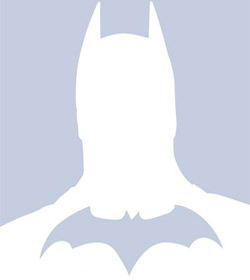

Mario Benjamin Arana Gochez
Mi razón por la cual me gusta Batman es por lo que se representa. Es un ser humano cualquiera con enfermedades y defectos, pero eso no lo detiene en buscar un mundo mejor.
Y por que es BATMAN!!!!!!!!!!!!